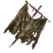

Халигардийское знамя
Предметы / С заданий
Открыть в интерактивной вики →
| Вес | 1 |
|---|---|
| Цена | 1 000 |
Описание
Знамя со времен воен с Ворлингами.  Лебер это нужно.
Лебер это нужно.
Лебер это нужно.| Знамя времён войн с ворлингами. Оно нужно Леберу. |
Где найти
Применение
|
Как добыть
Предмет можно найти во время поручения «Галигардские знамёна» в следующих локациях:
|